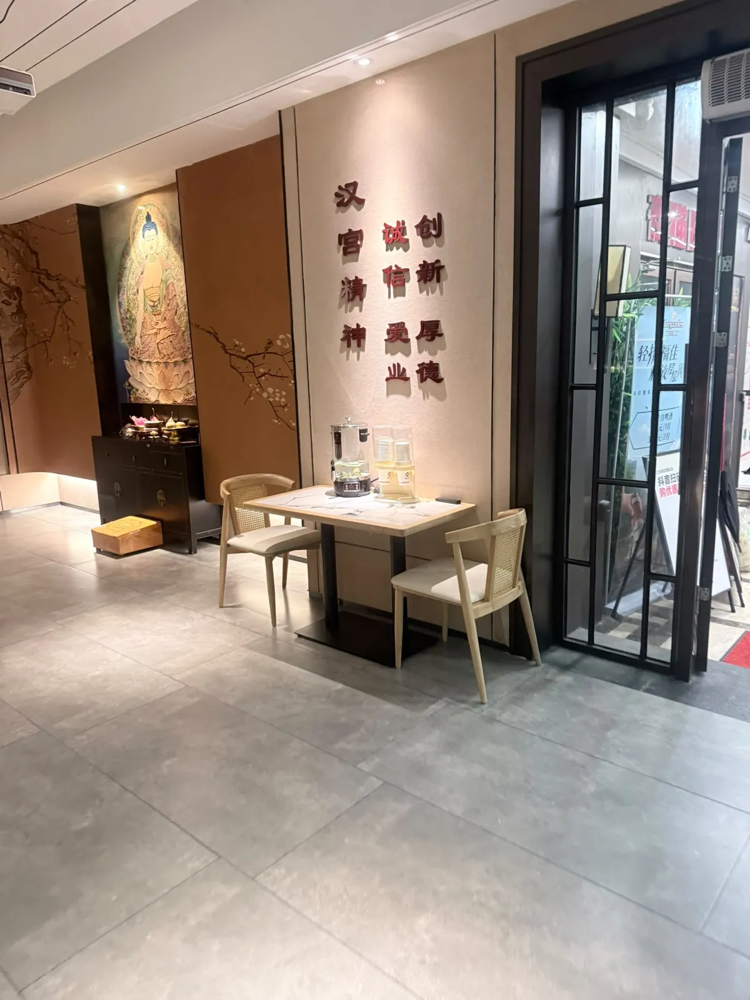
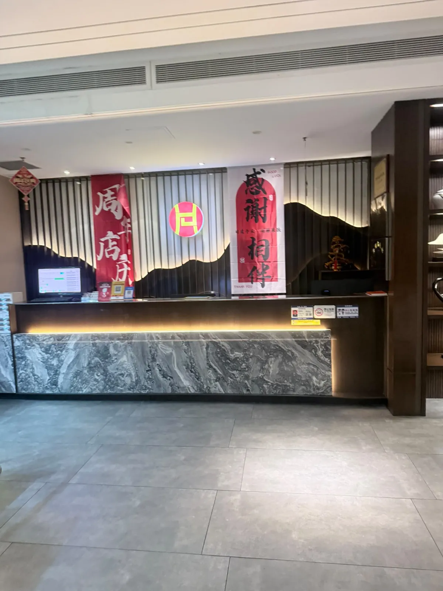
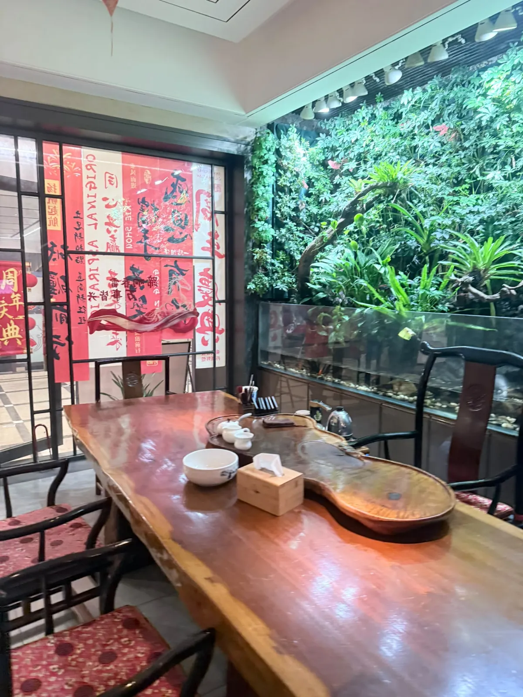

漢仁宮古法按摩（南山中心店）：90 分鐘足道實付 ¥255
深圳南山一間古法按摩店，做嘅係足道同經絡嗰種，唔係食肆。當日肩頸同頭部特別緊繃，所以買咗張 90 分鐘嘅券：原價 ¥329、實付 ¥255，自費。一句總結：流程完整、當下確實鬆咗，但技師初期力度偏重，要出聲先調整得返；隔日背部仲有少少酸脹。下面拆開講，重點係「點樣同技師講力度」呢件事。
做咗咩，同幾多錢
當日紀錄
到訪日期：
做咗咩：
實付：
券面原價：
券嘅條款：
營業時間：
地址同點去：
北上一日來回，落機／過關即用嘅數據方案可以睇 。 ⚠️ 呢條係 Klook 上網卡嘅總表，入面搵「中國」就係。連分類頁唔連單一產品頁，係因為單一產品下架會變 404，分類頁唔會。本站部分連結為推廣連結，經此類連結消費本站可能獲得佣金，價格不受影響。
價錢、輪候同技師編排會變，所以佢哋抽咗出嚟獨立標明核實月份 —— 實食紀錄呢個分區嘅硬規則之一。正文只留唔會變嗰部分。

力度呢件事：出咗聲先啱
環境乾淨，接待熱情。做嘅係 123 號技師。
起初手法偏重。推背嗰陣，作者背部比較硬，當下有啲痛，甚至會不自覺繃緊 —— 呢個反應本身就係一個訊號：肌肉一繃緊，跟住落嚟嘅力度只會更難受。
向技師反映之後，佢立刻調整咗力度，並耐心詢問耐受點。之後按肩頸同頭部嗰段舒服好多，鬆筋嘅節奏亦變得更流暢。
呢件事值得寫出嚟，因為佢唔係一個「運氣好唔好」嘅問題。去之前一定要同技師溝通自己能承受嘅力度 —— 作者今次就係靠即時反應令技師調整，先避免咗第二日更嚴重嘅酸痛。

當下同隔日，係兩個結果
90 分鐘涵蓋足底、小腿、背部、肩頸同頭部，流程完整。
按完當下：肩頸確實鬆咗唔少，頭部亦輕盈許多。
隔日醒來：背部被重按過嘅部位仍有少少酸脹，但屬可接受範圍，冇影響日常活動。
兩個結果分開寫，係因為佢哋唔可以互相抵消。當下鬆咗唔代表冇後果；隔日有少少酸脹亦唔代表當日做得差。要判斷值唔值，兩個都要計埋。

平台數據點讀
平台數據（大眾點評，唔係本站評分）
評分：
分項：
人均：
分類同榜單：
店內設施（平台標籤）：
呢度值得留意嘅係分項：技師 4.5 高過環境 4.4 同服務 4.4，亦高過總分 4.3。同本站呢次嘅經歷夾得返 —— 扣分嘅位喺初期力度，唔喺人。
人均 ¥247 夾喺券面原價 ¥329 同實付 ¥255 中間。呢類店嘅單價闊度冇快餐咁大，所以三個數靠得埋；但人均仍然係平台把所有帳單除人頭嘅滾動平均，唔係「你會俾幾多」。
本站判斷
本站判斷
評分：
滿分五分俾四分。扣分項係初期力度拿捏唔夠細膩，但 123 號技師嘅服務態度同應變能力都值得肯定。下次再去會直接指定佢，並提前講輕一點。
常見問題
90 分鐘實際按邊啲部位？
足底、小腿、背部、肩頸同頭部，流程完整。呢個係本站到訪嗰次嘅內容，唔一定每次都一樣。
力度會唔會太重？
本站呢次係。123 號技師起初手法偏重，推背嗰陣背部比較硬，當下有啲痛，甚至會不自覺繃緊。向佢反映之後，佢立刻調整咗力度，並耐心詢問耐受點，之後就舒服好多。所以答案唔係「重定唔重」，係「你要出聲」—— 去之前先講清楚自己能承受嘅力度。
隔日會唔會周身痛？
本站隔日醒來，背部被重按過嘅部位仍有少少酸脹，但屬可接受範圍，冇影響日常活動。呢個係一次到訪嘅結果，而且係喺中途已經調低咗力度之後嘅結果。
「人均 ¥247」係咪即係我要俾 ¥247？
唔係。嗰個係平台把所有帳單除人頭嘅滾動平均。本站呢次用團購券，券面原價 ¥329、實付 ¥255。呢類店嘅單價闊度冇快餐咁大，所以三個數幾接近，但人均講嘅仍然係「其他人平均俾成點」，唔係「你會俾幾多」。